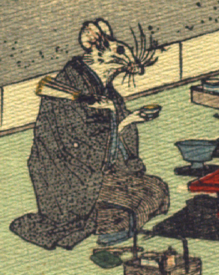

男の鼠。黒っぽい着物に羽織をまとい、座っている。手は人間のものである。左手に扇子、右手に盃を持っている。膝元に煙管と煙草盆らしきものが見える。
著作者：J.Dautremer／出典：親書誌：U426_nichibunken_0111：Le mariage de la souris／日付：2006／資源識別子：U426_nichibunken_0111_0002_0001
Copyright (c)2010- International Research Center for Japanese Studies, Kyoto, Japan. All rights reserved.